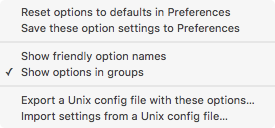

Make the Current Tidy Options Default
You can use Balthisar Tidy for Work’s Tidy Options panel to work with a document until you are satisfied that Tidy produces the results that you want. It’s very easy to apply a document’s settings to Preferences automatically so that they will be the default settings for the next document that you open.
-
Access the menu at the bottom of the Tidy Options panel in the document that you want to use as the source for the new default settings. 
-
Select Save these option settings to Preferences.
-
If you open a document or create a new document, you will see that the new defaults are now active.
-
When you open Preferences you will see that the new defaults are now active.